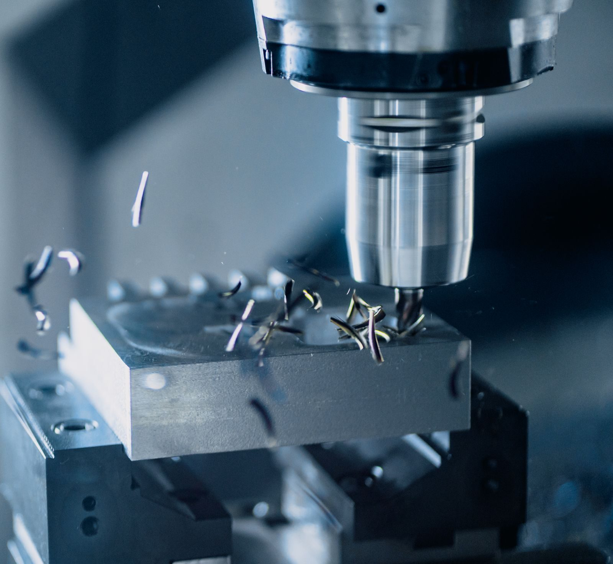
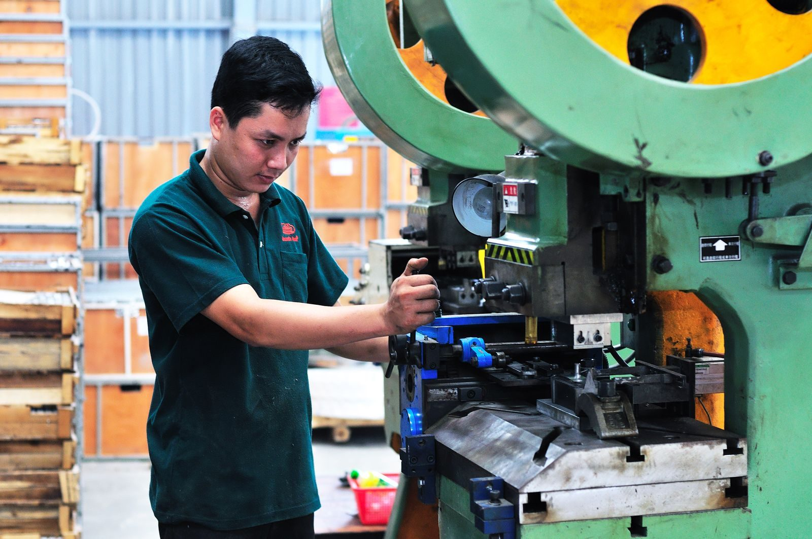
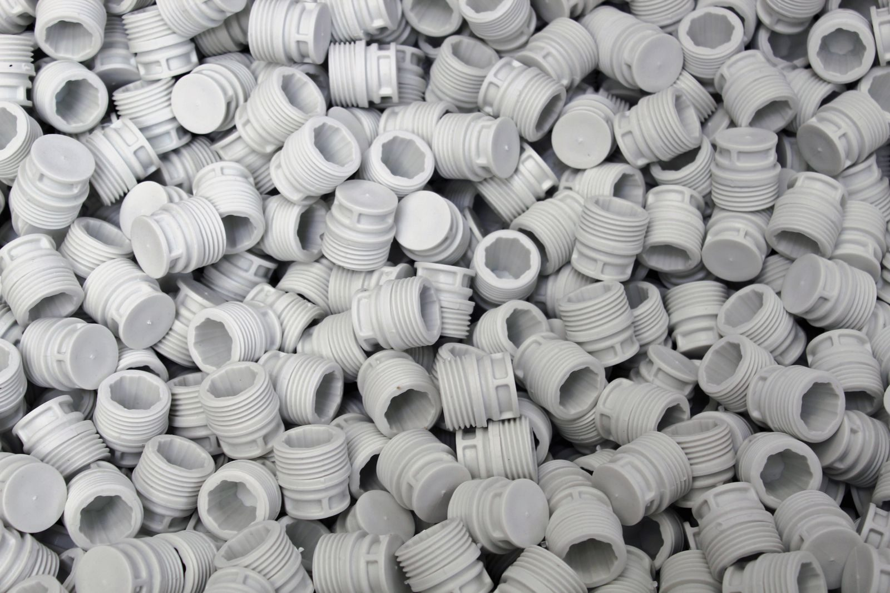

CNC or Injection Moulding for Prototype Parts: The Decision That Sets Your Lead Time
The choice between CNC machining and injection moulding for a prototype part is not a quality choice - it is a lead time choice. The part that is machined now is the part that is in your hand next week; the part that is moulded is the part that is in your hand next month. The decision is the lead time, and the lead time is the cost.
What the two processes actually buy you
CNC machining buys you the part now. The part is cut from a block of material, and the part is ready in days. The cost is the material, the machine time, and the operator's time. The part is not interchangeable with a moulded part - the surface finish, the dimensional tolerance, and the material behaviour are all different.
Injection moulding buys you the part at scale. The part is moulded from a tool, and the tool is ready in weeks. The cost is the tool, the mould, and the first article. The part is interchangeable with every part that comes out of the mould, and the interchangeability is the reason you mould.
Underneath that trade sits a difference in how the two processes relate to the drawing. Machining is subtractive and file-driven: a released CAD model plus a stock of material plus a workholding plan is enough to start, and the process holds the geometry you specified, dimension by dimension, against general tolerance standards such as ISO 2768. Moulding is additive in effect: the part geometry lives in the tool, the tool geometry is shaped by flow analysis, and the finished dimensions emerge from an interaction of material shrinkage, cooling and holding pressure that no single drawing tolerance can fully pin down. Neither process is "more precise" in the abstract - they hold different things precisely, and the prototype question is which of those things your programme needs first.
Where the decision actually gets made
The decision is made at the prototype stage, not the production stage. A prototype that is machined is a prototype that is tested now; a prototype that is moulded is a prototype that is tested next month. The test that fails at the machined prototype is a test that is cheaper to run now than next month, and the machined prototype is the one that gives you the failure data to fix the design before the tool is cut.
Sequence matters more than cost per part at this stage. If the design is still moving, machining absorbs the movement; if the design is frozen and the risk has shifted to manufacturing, the tool is the right investment. Most programmes that get into trouble do so by reversing that order - freezing the drawing to suit a tool that was cut early, then discovering the real failure modes during production ramp.
The cost that hides in the choice
The cost that hides in the choice is the design change. A design change that is made on a machined prototype is a change that is made in days; a design change that is made on a moulded prototype is a change that is made in weeks, because the tool has to be re-cut. The machined prototype absorbs the design change at the cost of machine time; the moulded prototype absorbs it at the cost of the tool.
The second hidden cost is the false negative. A prototype made by the wrong process can pass tests the production part will fail, or fail tests the production part would pass - because the material behaviour, the wall thickness distribution and the surface finish are all process-dependent. A machined part made from cast stock tells you nothing about the knit lines a moulded part will carry at the same geometry. Prototype data is only decision-grade when the process that produced it matches the process that will produce the product, or when the difference has been consciously accepted and written into the test plan.
Tolerances and materials: what each process can actually hold
Match the part's tolerance stack to the process. A part that is specified to a tolerance that CNC can hold but moulding cannot is a part that is machined; a part that is specified to a tolerance that moulding can hold but CNC cannot is a part that is moulded. The comparison below is the one most buyers end up making explicitly once, and informally every time after that.
| Dimension | CNC machining | Injection moulding |
|---|---|---|
| First physical part | Days after a released CAD model and material selection | Weeks - tool design, flow analysis and tool making come first |
| Tolerance regime | Per-feature tolerances to general standards such as ISO 2768 classes | Process-dependent; shrinkage and warpage are managed, not eliminated |
| Design change | Re-program and re-cut stock; typically the cheaper iteration | Tool modification, or a new tool for large geometry changes |
| Material behaviour | Stock material properties as certified by the mill | Melt-processed; fillers, colourants and recycled content shift properties |
| Finish and texture | As-machined, with secondary finishing as a separate step | Moulded-in texture and colour, repeatable across every shot |
| Volume economics | Unit cost broadly flat with quantity; no tool to amortise | Unit cost falls as quantity amortises the tool investment |
| Best prototype role | Design iteration, functional testing, bridge quantities | Design freeze validation, approval samples, production-representative parts |
The practical reading of the table: a prototype that exists to answer a design question should be machined; a prototype that exists to prove the manufacturing process should be moulded. Confusing the two is the most expensive mistake in the prototype budget, because it spends the tool money before the design money has finished its job.
How a moulding programme is actually run
Injection moulding is not one operation but a chain of them, and the lead time buyers feel at the prototype stage is almost entirely tool-chain time. A capable OEM/ODM moulding operation runs the full sequence in-house, and the sequence is worth knowing because it tells you where a design change is cheap and where it is not.

The chain typically runs: industrial design, structural design, sample production, mould flow diversion, mould analysis, mould making, injection moulding, secondary processing, assembly, and product testing. The middle of that chain - flow diversion and mould analysis - is where the process is decided. Flow analysis simulates how the melt fills the cavity, which is how knit lines, weld lines, sink marks and gas traps are found before steel is cut rather than after. Moulding operations that manage their tools digitally and monitor the process in real time can hold parameters within a narrow band, which is what keeps shot-to-shot variation under control once the tool is running.
For buyers, the two questions that matter about the tool chain are: what changes are possible without cutting new steel, and what the first-article process looks like when the tool is finished. A moulding supplier that also offers full product assembly and testing, as DAYIN's injection moulding and assembly operations do across their Dongguan and Vietnam sites, can take a project from structural design through to a tested, assembled product under one quality system - which is what keeps a prototype programme from fragmenting across four suppliers.
When CNC is the right prototype process
Choose CNC when the design is not final, when the part exists to answer a question, or when the quantities are small enough that a tool cannot amortise. Machining is also the right route when the material is a machinable engineering plastic or metal that behaves well as stock - and when the tolerance on a critical feature sits tighter than a moulded process can hold repeatably. Bridge quantities are a classic use: the parts that keep a launch moving while the production tool is still being cut.

What machining will not give you is production-representative material behaviour. A machined plastic part is cut from stock with the material's certified properties intact; a moulded part has been melted, sheared and cooled, and its properties depend on the flow path. If your prototype test programme includes drop, fatigue or thermal cycling, plan for that difference deliberately - either by testing both a machined and a moulded sample, or by accepting the machined result as an upper bound and re-verifying on the first moulded parts.
When a moulded prototype is the right call
Choose moulding when the design is frozen and the question has shifted from "is this the right part" to "can this part be made, repeatably, at volume". A moulded prototype - even from a soft or bridge tool - exercises the real process: the flow path, the cooling, the ejection, the cycle. The data it produces is the data your production tool will reproduce, and that is what makes it worth the wait.
The consumer-electronics categories show the pattern clearly. An automatic pet feeder is electronics plus food contact, so the moulded parts, the seals and the assembly process have to be specified together - the way DAYIN's automatic pet feeder programme pairs single-container and double-bin WIFI models with the moulding and assembly that produces them. A robot vacuum cleaner is a navigation, suction and battery assembly where the moulded shell is a small part of the cost and a large part of the fit and finish - the DAYIN robot vacuum cleaner range, with its laser-navigation base-station models, is built around exactly that kind of integrated moulding-plus-assembly scope.
In both cases the prototype logic is the same: machine the structural iterations early, then move to moulded samples once the geometry is stable, so that the approval sample is production-representative rather than a beautiful one-off.
A hybrid path that most programmes take
Very few programmes choose one process forever. The common path runs machined prototypes through design iteration, a bridge or soft tool once the geometry stabilises, and a production tool at design freeze. Each step buys a different kind of confidence: the machined parts buy design confidence, the bridge tool buys process confidence, and the production tool buys cost confidence.
The discipline that makes the hybrid path work is treating the transition points as gates with defined evidence. Before the tool is cut, the drawing is frozen and the material is selected; before the first production run, a first article is inspected against the drawing with dimensional reporting. A moulding programme that supports custom sizes and negotiates minimum order quantities around the buyer's real ramp gives you room to sequence those gates without paying for a full production tool at prototype volumes.
Common mistakes
The first mistake is moulding before the design freeze, which spends tool money to freeze a drawing that was not ready. The second is using machined prototypes for final certification without accounting for the material difference - a machined sample can pass a test the moulded part will fail. The third is skipping flow analysis on the assumption that the toolmaker will handle it; flow analysis is exactly where the warp, sink and knit-line risks are supposed to be found, before steel. The fourth is ignoring the assembly and secondary operations: a prototype that arrives as loose mouldings proves nothing about a product that ships assembled, so the supplier's assembly and testing scope belongs in the comparison from the start.

Conclusion
The decision is the lead time, and the lead time is the cost. Machine the parts that answer design questions, mould the parts that prove manufacturing, and sequence the two so the tool is cut after the design has stopped moving. Ask a moulding supplier for the tool-chain plan, the flow analysis and the first-article process before committing; ask a machining supplier for stock certification and dimensional reporting on the first article. Whichever process you choose for the prototype, choose it for the reason the prototype exists.
Frequently asked
When should I choose injection moulding over CNC for a prototype?
When the prototype is the final part and the tool has to be cut. When the prototype is the test part and the design is not final, choose CNC - the design change is cheaper to run on the machined part than on the moulded one.
What is the lead time difference between the two?
A machined prototype is in your hand in days; a moulded prototype is in your hand in weeks. The difference is the tool, and the tool is the cost that you cannot absorb into the prototype budget without a plan. Moulding suppliers typically quote OEM/ODM production lead times in the range of several weeks, depending on product complexity and quantity.
How do I know which process my part needs?
Match the part's tolerance stack to the process. A part that is specified to a tolerance that CNC can hold but moulding cannot is a part that is machined; a part that is specified to a tolerance that moulding can hold but CNC cannot is a part that is moulded. The process manufacturer will publish the tolerance figures for the part it is built for.
Can I use machined prototypes for final certification testing?
Only with a written acceptance of the difference. Machined parts carry the certified properties of the stock material; moulded parts have been melt-processed and carry whatever the flow path gave them, including knit lines and residual stress. For functional tests that depend on material behaviour, either test both process variants or treat the machined result as provisional and re-verify on the first moulded parts.
What should I ask a moulding supplier before cutting a tool?
Ask for the tool-chain plan - where flow analysis happens, who cuts the tool, and what changes are possible without new steel. Ask for the first-article process, including dimensional reporting against the frozen drawing. Ask whether assembly, secondary processing and product testing are in scope, because a prototype that arrives as loose mouldings proves nothing about a product that ships assembled. And confirm the minimum order quantity and lead-time assumptions in writing before the purchase order.